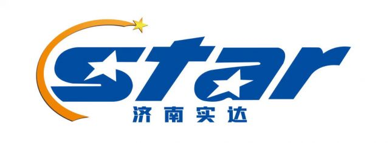

MITEX 2026 · Китай · Стенд 6A904
JINAN STAR FASTENER CO.,LTD.
Карточка проверена 10 ноября 2026, 09:25 · Источник ↗ · Снимок оригинальной карточки ↗
О компании
Мы являемся профессиональным производителем и экспортером всех типов крепежных элементов, включая болты, винты, шпильки и заказные крепежные элементы. Мы поставляем крепления из углеродной стали и нержавеющей стали различных сортов и поверхностной обработки для строительной, машиностроительной, автомобильной и ветровой энергетической промышленности.
Контакты
Все контактные сведения из карточки
Контакты INTERSECTION OF SHANSHUI RD. AND CHANGAN RD. EAST INDUSTRIAL AREA PINGYIIN JINAN CHINIA Веб-сайт: https://WWW.JNSTARFASTENER.COM E-mail: ZHANGGUO@STARFASTENER.COM Телефон: 0086-0531 87896305
Все рубрики участника
Mitex - Рубрикатор
- 12. Крепеж, метизы, скобяные изделия
Зал
- Зал № 6
Участник выставки
- MITEX
- MITEX FASTENERS
Видео, каталоги и документы
В доступной карточке нет видео или документов. Смотрите сайт участника.